Сервис
подбора
психологов
Мобильное приложение, которое помогает подобрать психолога под запрос и цену за несколько шагов — без долгого поиска и стеснения.
О продукте
Люди откладывают обращение к психологу: непонятно, к кому идти, сколько это стоит и с чего начать. Задача продукта — снять этот барьер и довести человека от первого запроса до подобранного специалиста за минимальное число шагов.
Что я сделал
- Определил ЦА и собрал персонажи
- Сформулировал гипотезы и JTBD
- Спроектировал user flow и информационную архитектуру
- Разработал ключевые экраны и дизайн-систему
- Упаковал решение в презентацию для стейкхолдеров
Проблема
Барьер входа в терапию высокий: непрозрачные цены, страх «не того» специалиста, отсутствие понятного первого шага. Из-за этого люди с неостро выраженными проблемами не доходят до помощи.
Целевая аудитория
- Люди 20–50 лет, мужчины и женщины
- География не имеет значения (онлайн)
- Доход средний / выше среднего
- Неостро выраженные психологические проблемы
Персонажи
Гипотезы
На основе персонажей я сформулировал продуктовые гипотезы — что снизит барьер входа и доведёт человека до сессии.
- Подбор по запросу и цене снижает страх «выбрать не того»
- Прозрачные ценовые категории повышают конверсию в оплату
- Короткий онбординг с подбором проблем ускоряет первый шаг
- Возможность выбрать пол психолога повышает доверие
Jobs To Be Done
User Flow
От экрана загрузки — через онбординг и регистрацию — к подбору проблем, предпочтениям и ценовой категории, и далее в главный экран и личный кабинет.

Решение
Онбординг и подбор
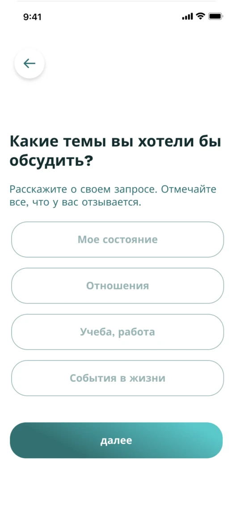
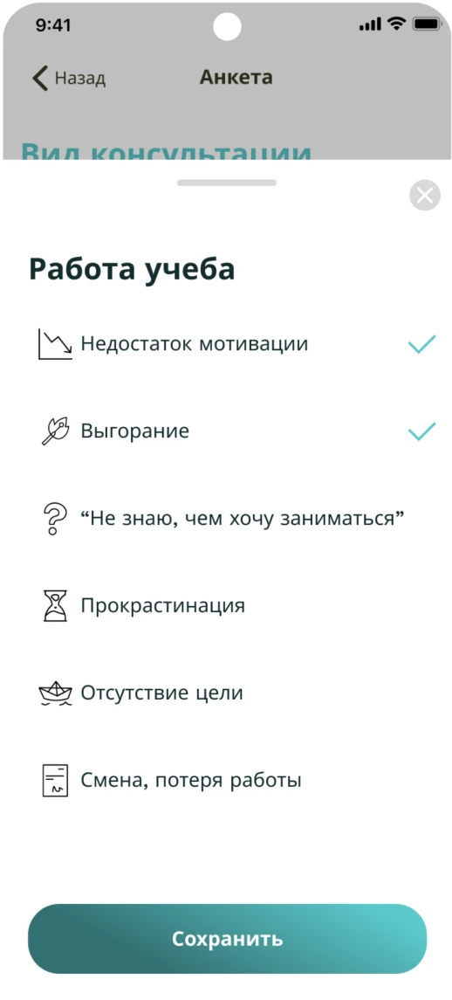
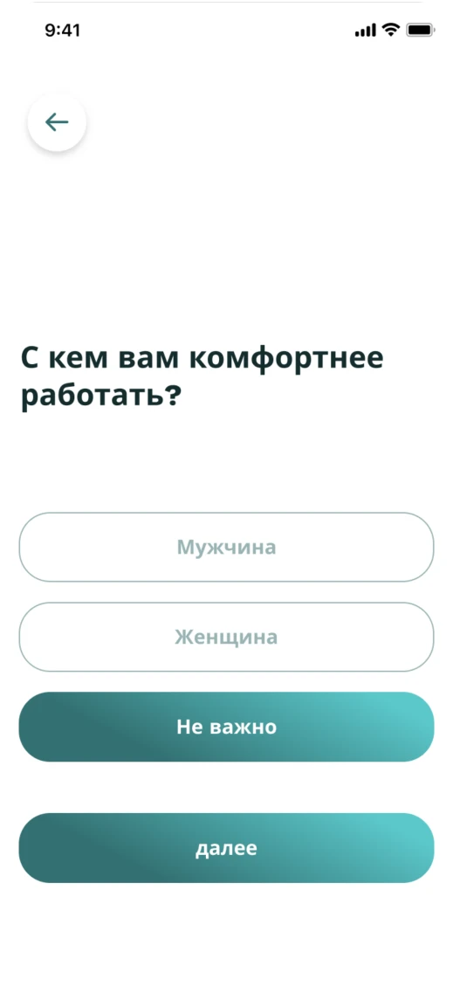
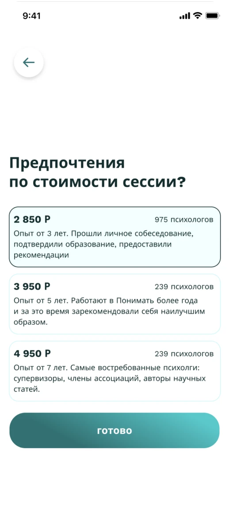
Главный экран и кабинет
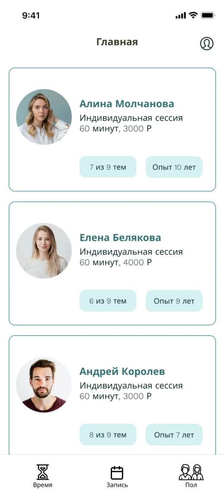

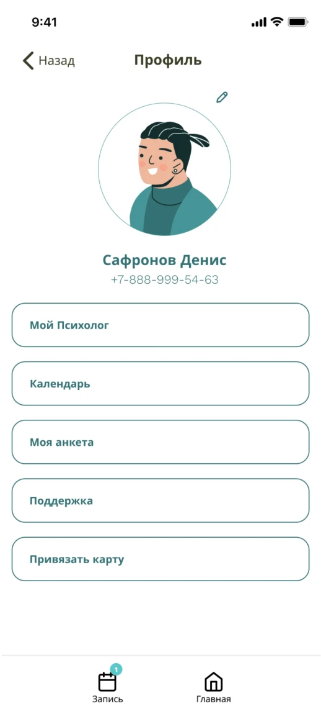
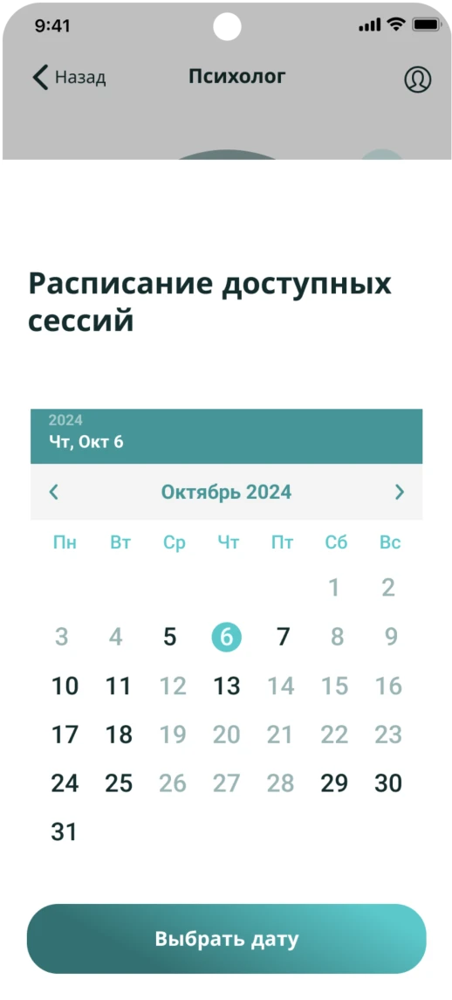
Другие экраны
Остальные состояния и экраны продукта: вход, оплата, поддержка и сопутствующие сценарии.
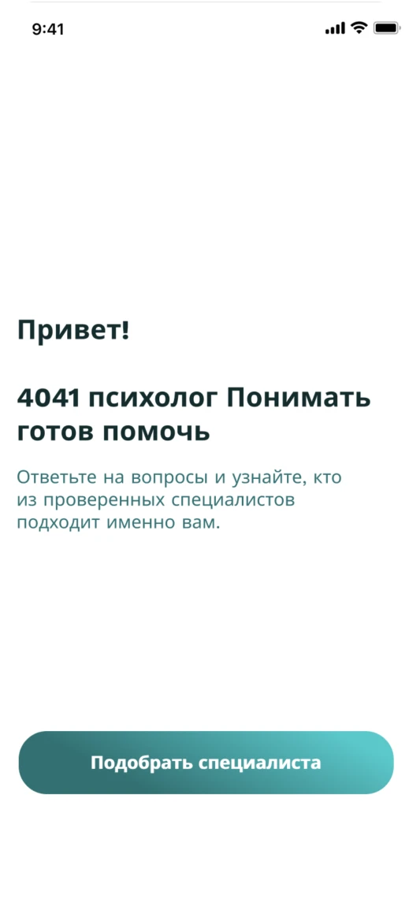
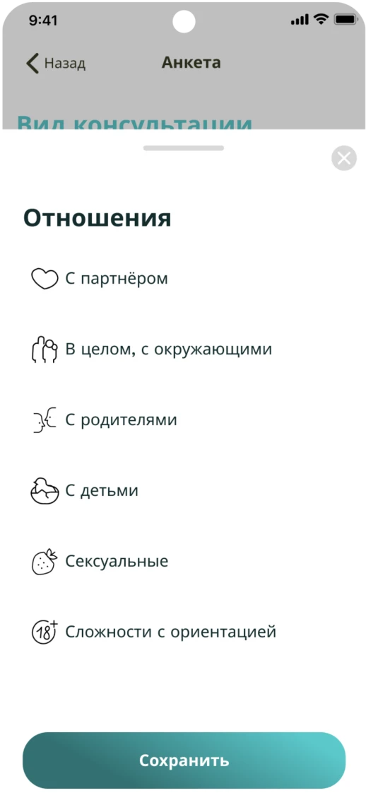
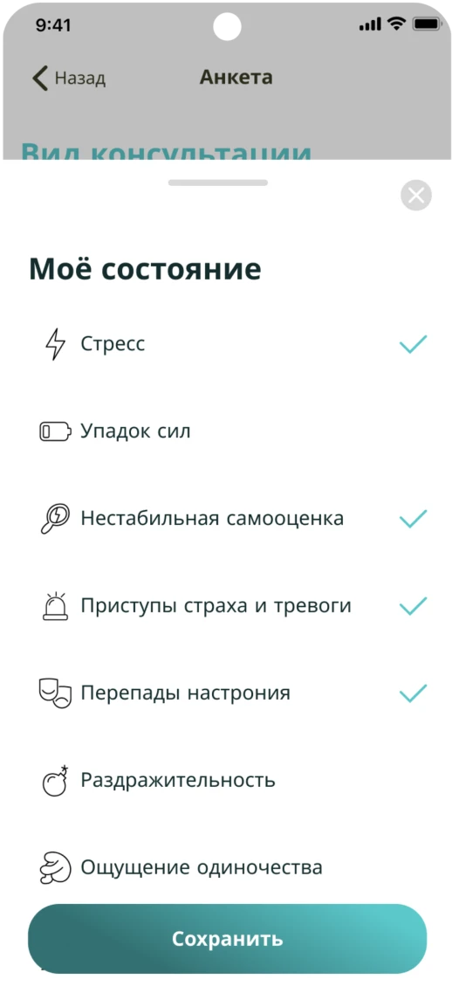
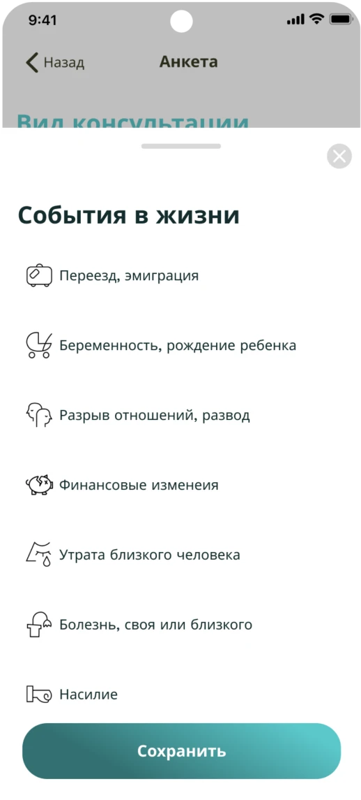
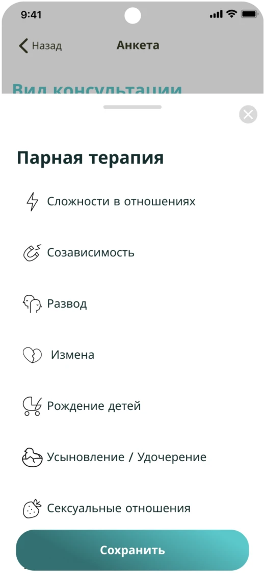
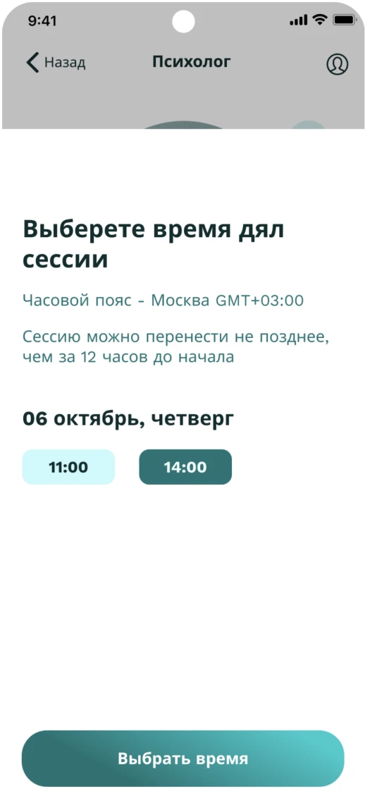
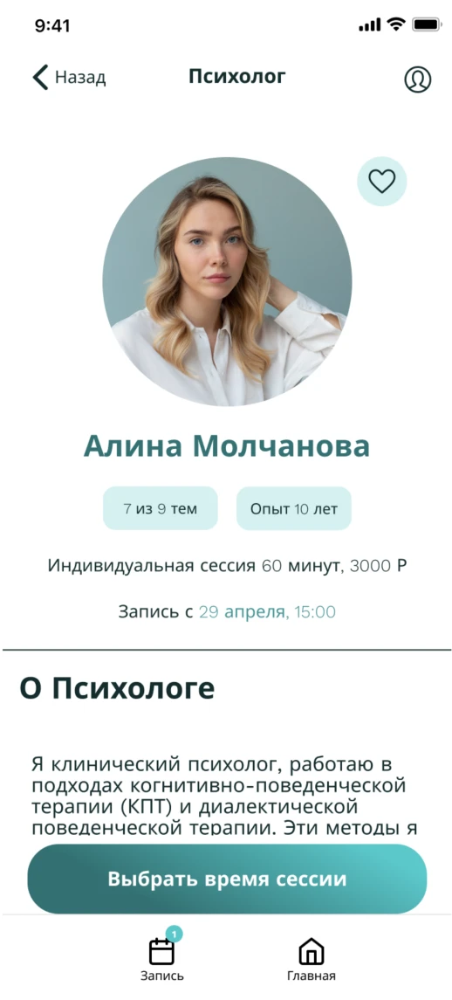
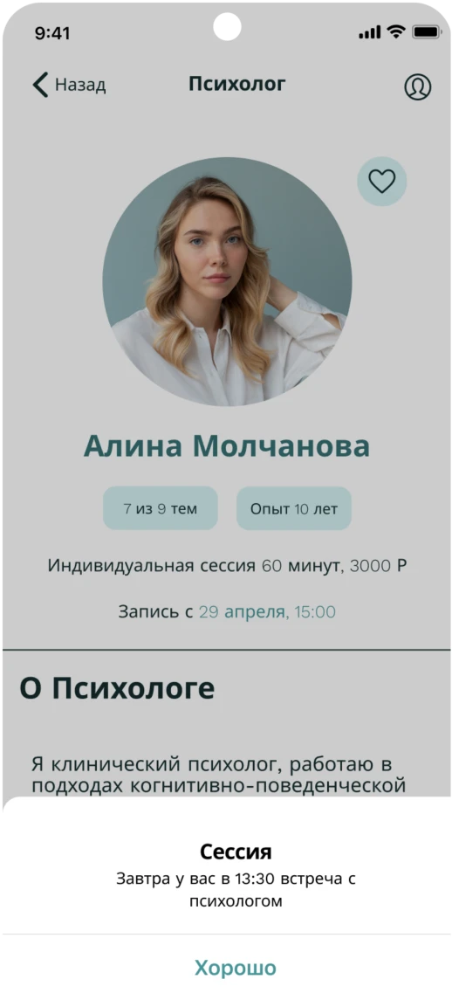
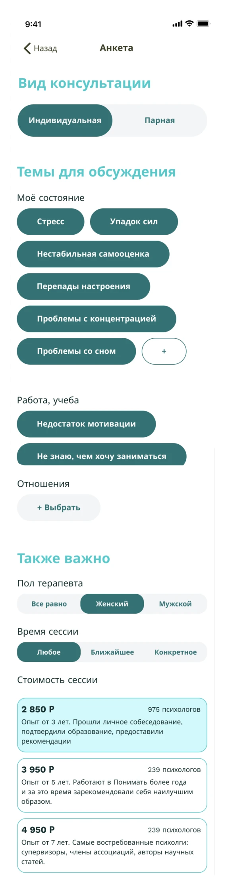
Итоги
Собрал целостный концепт продукта: от аудитории и гипотез до экранов и дизайн-системы, готовый к передаче в разработку и проверке гипотез на пользователях.
Что дальше
- Юзабилити-тесты онбординга и подбора
- Проверка конверсии в оплату по ценовым категориям
- Расширение личного кабинета и календаря
Я понимаю, что сервис подбора психологов — не самый сильный выбор для продуктового кейса: ниша перегружена, а часть решений здесь скорее учебные. Этот проект я делал прежде всего как тренировку — чтобы разобрать методики UX-исследования, отработать построение user flow и логику онбординга, проверить продуктовые гипотезы на практике. Мне было важно не «изобрести рынок», а прокачать сам процесс проектирования: от задачи до готовых экранов.
- Построение user flow и информационной архитектуры с нуля
- Формулирование гипотез и работа с JTBD
- Сбор персонажей и связка решений с их задачами
- Сборка единой дизайн-системы и переиспользуемых компонентов